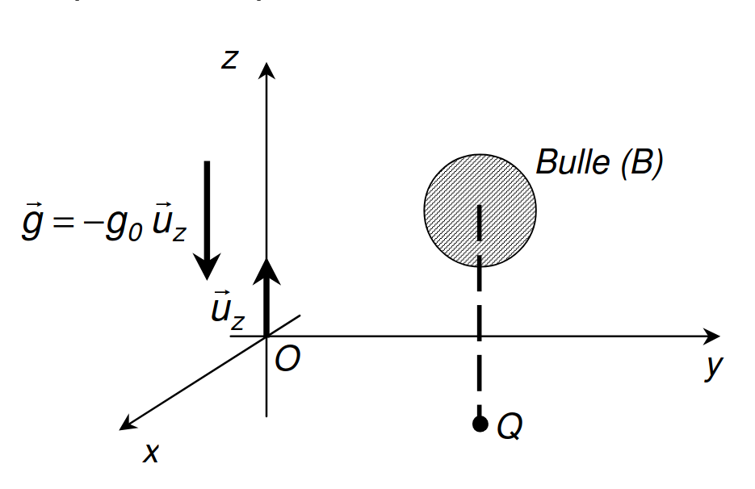

Sondage Atmopshérique
Table of Contents
1 Introduction
1.1 Objectifs de l'activité et compétences travaillées
Un ballon-sonde mesure les caractéristiques de l'atmosphère à l'aide d'instruments embarqués jusque des altitudes variables selon les modèles (ouverts/fermés) et les circonstances. On retient souvent la valeur approchée de \(50~km\). Est-ce bien réaliste et pourquoi une telle limite ?
Les données obtenues en fonction de l'altitude sont renvoyées au sol par signal radio. Comme vous pourrez le voir par la suite, l'importance de ces données in situ est cruciale pour affiner les modèles physiques de l'atmosphère utilisés en météorologie et notamment calibrer les mesures réalisées par satellite à des fin de télédétection.
Nous vous fournissons ici une vingtaine de valeurs de température à analyser. Les questions Q1 à Q12 vous guident pour atteindre les 2 ojectifs principaux de cette activité :
- Construire des profils verticaux \(\rightarrow\) identifier les couches atmosphériques
- Déterminer un profil de pression \(\looparrowright\) 100 km tenant compte de \(\Delta T\)
- Discuter la pertinence du choix de certaines hypothèses (iso-g, iso-T)
Une participation active et constructive sera toujours bienvenue et valorisée. Vous êtes autorisés (et encouragés !) à nous solliciter pour nous soumettre vos questions scientifiques (ex: Mais c'est quoi un gradient adiabatique ?) ou techniques (ex: Comment faire converger mon algorithme efficacement ?).
Voici un début de liste des compétences qui seront travaillées dans ce module :
- Implémenter des méthodes numériques : interpolation et intégration
- Comprendre le principe de la régression
- Explorer quelques possibités du language
Python+numpy\footnote{avec l'utilisation de ~Matplotlib~ syntaxe proche de ~MATLAB~\texttrademark}
Accéssoirement, vous pourrez utiliser des librairies spécialisées telles que scipy, pandas, plotly (…) et d'autres outils que vous aimeriez partager s'il permettent de gagner du temps de développement ou du temps de calcul.
1.2 Evaluation
S'il nous reste un peu de temps, nous pourrons aborder les points optionnels (\(\ddag\)) suivants traités aux questions Q13, Q14, Q15 et Q16 :
- Modéliser la physique de l'ascension d'un ballon sonde fermé (‡)
- Estimer l'altitude maximale que celui-ci peut atteindre (\(\ddag\))
[x] A défaut, ces points pourront être avantageusement terminées à la maison pour constituer une évaluation.
[x] Un exercice sur la formation d'un nuage vous est donné à faire en Devoir Maison.
1.3 Documentation et remerciements
biblio
Cette activité est très largement inspirée de la lecture des documents suivants (liste à compléter)
TODO nommenclature et origine des noms des couches
\newpage
2 Dimensions de la Terre et idées reçues
2.1 Les grecs et le rayon de la Terre (méthode d'Eratosthène)
Un peu de géométrie
TODO Le projet LAMAP
2.2 La "hauteur" de l'atmosphère chez les anciens (méthode du twilight)
TODO Publication orginale
Interprétation
3 Première analyse des données de température
3.1 Tableau commenté
Voici le profil vertical avec une petite une visualisation ASCII artisanale\footnote{Depuis Emacs(org-mode), on applique la formule : \#+TBLFM: ~\$4='(orgtbl-ascii-draw \$3 175 290)~}.
| z(km) | T(°C) | T(K) | T (ASCII Profile) |
|---|---|---|---|
| 100 | -72 | 201 | WWh |
| 95 | -81 | 192 | WV |
| 92 | -86 | 187 | W; |
| 84 | -86 | 187 | W; |
| 80 | -86 | 187 | W; |
| 75 | -79 | 194 | WW |
| 70 | -65 | 208 | WWWc |
| 65 | -54 | 219 | WWWWl |
| 60 | -33 | 240 | WWWWWWV |
| 55 | -17 | 256 | WWWWWWWW! |
| 52 | -7 | 266 | WWWWWWWWW! |
| 48 | -2 | 271 | WWWWWWWWWW |
| 45 | -2 | 271 | WWWWWWWWWW |
| 40 | -8 | 265 | WWWWWWWWWc |
| 35 | -22 | 251 | WWWWWWWH |
| 30 | -37 | 236 | WWWWWWc |
| 25 | -46 | 227 | WWWWWc |
| 20 | -56 | 217 | WWWWc |
| 12 | -56 | 217 | WWWWc |
| 10 | -49 | 224 | WWWWW. |
| 5 | -18 | 255 | WWWWWWWW; |
| 0 | 15 | 288 | WWWWWWWWWWWV |
On repère les tendances discutées au premmier cours, les creux et les bosses correspondant aux minima et maxima locaux. Des valeurs identiques pourraient indiquer des bandes stationnaires mais l'échantillonage est insuffisant pour trancher.
Le tableau de données est saisi à la main puis commenté en groupe :
- << il fait froid >> : en effet la température \(T\) est toujours (vraiment ?) négative au delà de 5 km
- à l'évidence, \(T\) n'est connue qu'en certaines altitudes, espacées de manière irrégulière
- depuis le sol, des tendances sont identifiables : \(\searrow\) , \(\nearrow\) , \(\searrow\) , \(\nearrow\)
- des mesures font apparaître des valeurs identiques (stagnation ?)
- les étudiants se demandent alors si cela ne posera pas de problème numérique (à creuser)
Attention, la conversion en Kelvin peut-être source d'erreurs ! Pour nos calculs, on prendra garde à bien vérifier que le zero absolu correspond à une température de \(-273~C\) c-à-d que :
\[T(K) = T(C) + 273 \]
3.2 TODO Utilisation de pandas (Jean ?)
3.3 TODO Traduction vers MATLAB/Scilab/Octave (Morgane et al ?)
4 TODO Rappels de physique
C'est l'occasion d'un petit rappel sur la signification des grandeurs thermodynamiques température, pression, volume et de leur signification (agitation microscopique, énergie cinétique, …).
On rappelle ici quelques relations utiles à savoir manipuler pour la résolution de problèmes classiques d'équilibre de l'atmosphère :
5 Méthodes numériques
5.1 Méthode 1 - Estimation d'une valeur entre deux points de mesure
5.1.1 principe de l'interpolation linéaire
Exercice : on détermine à la main la valeur d'un point millieu interpolé, par exemple entre 30 et 40 km d'altitude et on confronte cette valeur à une donnée rélle. Cela nous permet de réfléchir à la signification d'une interpolation, au sens de variation, etc.
Définition : une interpolation linéaire consiste à approximer localement une grandeur physique (ici une température) en un abscisse donnée (ici une altitude) située entre deux points expérimentaux par une loi affine passant par ces points
5.1.2 possibilité d'une interpolation non-linéaire
5.2 Méthode 2 - Intégration numérique
5.3 Méthode 3 - Regression
\newpage
6 Correction des questions
6.1 Détermination du profil vertical de température - Q1 à Q4
Q1 - mini algo pour la droite d'interpolation
Considérons un petit intervalle \(Z_{i}\) = \(\left[ z_{i} ; z_{i+1} \right]\) et plaçons en ordonnée deux points successifs \(M_{i} \left( z_i,T_i \right)\) et \(M_{i+1} \left ( z_{i+1}, T_{i+1} \right)\). Nous avons répondu à l'oral aux questions suivantes :
- Que vaut la température correspondant à un point milieu de cet intervalle ?
- De combien de paramètres dépend la fonction d'interpolation affine \(T(z)\) sur \(Z_{i}\) ?
- Exprimer les en fonction des données mesurées aux points \(M_{i}(z_i,T_i)\) et \(M_{i+1}(z_{i+1}, T_{i+1})\). \footnote{Dans ce cas simple, on peut bien sûr trouver la solution par tatônnements. On pourra sinon poser proprement un système d'équations, avec autant d'équations que d'inconnues, méthode qui s'avérera toujours payante pour les techniques d'interpolation plus sophistiquées ...}
Q2 - écriture d'une fonction en Python/MATLAB
Ecrire une fonction T(z,unite) fournissant la température de l'air pour une altitude \(z\) parcourant l'intervalle \([0 ; 100]\) \(km\). \footnote{On prendra garde à intégrer les bonnes conversions d'unité pour les distances (facteur 1000) et les températures (différence de 273).}
Créer deux tableaux zatm et Tatm contenant N=1000 valeurs d'altitudes et de température.
| zatm(m) | 0 | … | 105 |
|---|---|---|---|
| Tatm(°C) | T0 | … | T100 |
Q3
Tracer le profil vertical de température (graphe basculé avec altitude en ordonnée et température en abscisse). Identifier les différentes couches de l'atmopshère.
6.2 Etude du profil vertical de pression - Q5 à Q12
6.3 TODO DM - Modélisation de l'ascencion du ballon - Q13 à Q16 (‡)
7 Exercice - Formation d'un nuage
On souhaite expliquer la formation d'un nuage d'une manière simplifiée en envisageant les mécanismes thermodynamiques responsables du phénomène. Ici nous faisons l'hypothèse que l'apparition d'un nuage est d'abord conditionnée par un déplacement adiabatique de masses d’air. \footnote{On ommet volontairement certains phénomènes subtiles de nucléation dans cette première approche.}
Cet exercice vous propose tout d'abord d'étudier la physique responsable de la création d’un courant ascendant pouvant conduire à la formation d'un nuage sous certaines conditions.
Un point de l'atmosphère est repéré par ses coordonnées cartésiennes (Oxyz), tel que l'axe (Oz) coïncide avec la verticale ascendante avec \(z=0\) pris au niveau de la mer. Par comodité, nous garderons les notations et valeurs numériques des constantes physiques utilisées pour le TP.
7.1 En l'abscence de mouvement (équilibre)
Des relevés expérimentaux montrent qu'en l'absence de mouvement de l'air, la température est fonction de l'altitude \(z\) suivant une loi affine :
\[ T(z) = T_{0} - \lambda z \]
Q1. (1 pt) Sur quelle intervalle de z cette approximation est-elle valable ?
Avec les hypothèse thermodynamiques faites en début d'exercice, on peut montrer que \(P\) et \(T\) sont liées par une relation de la forme :
\[ T =T_0 \left( \frac{P}{P_0} \right)^{q} \]
Q2. (2 pt) Réaliser à nouveau la démonstration de cette relation.
Q3. (1 pt) Déterminer l’exposant \(q\) qui s'exprime uniquement en fonction de \(M\), \(g_0\), \(\lambda\) et \(R\). Faites l'application numérique pour une valeur convenablement choisie de \(\lambda\).
7.2 Apparition d'un mouvement (instabilté)
L'état d'équilibre précédent est réalisé lorsque les isothermes (niveaux où \(T=Cte\)) et les isobares (\(P=Cte\)) coïncident avec les équipotentielles du champ de pesanteur (\(z = cte\))\footnote{les spécialistes parlent de configurations barotropes et baroclines}. En présence d’hétérogénéités de température au niveau du sol, l'air s'échauffe différemment et peut se mettre en mouvement, c'est un phénomène bien connu !
\bigskip

On se place à l'altitude \(z\) à la verticale du point \(Q\) et on suppose que l'air est localement plus chaud que l'air avoisinant. Tout se passe comme si une poche de gaz était limitée par une enveloppe souple et non tendue. On convient des hypothèses et notations suivantes :
- La bulle de gaz évolue sans échanger de matière ni de chaleur avec l'extérieur.
- La pression de la bulle reste égale à celle de l'air environnant à la même altitude.
- La température de l'air environnant varie toujours linéairement avec la température.
- On note \(P_B\), \(T_B\) et \(\rho_B\) la pression, la température et la masse volumique du gaz emprisonné dans la bulle. On note \(T_A\) et \(\rho_A\) la température et la masse volumique de l'air environnant à la même altitude.
Q4. (2 pt) Montrer que la bulle s'élève si \(T_B > T_A\).
Les questions suivantes nécéssitent la manipulation de quelques relations de thermodynamique. Le gaz emprisonné dans la bulle subit une transformation dite adiabatique. De plus, comme souvent en thermo on supposera la transformation réversible (ce n'est pas rigouresuememnt vrai mais c'est plus facile à résoudre ainsi).
Appellons \(T_1\) la température du gaz dans la bulle à l'altitude de sa formation \(z_1\) et \(P_1\) la pression correspondante.
Q5. (2 pt) En retrouvant une des 3 formes de l'expression de la loi de Laplace pour les gaz parfaits, exprimer \(T_B\) en fonction de \(T_1\), \(P_1\) et \(P_B\). En cas de difficulté, n'hésitez pas à consulter des ressources sur ce sujet pour cette question théorique (reformulez et citez vos sources).
Q6. (2 pt) On veut démontrer qu'il existe une altitude plafond \({z^{\star}\) pour l'ascension de la bulle. On note \(T^{\star}\) et \(P^{\star}\) la température et la pression de la bulle lorsqu'elle arrive à cette altitude. Evaluer numériquement \(T^{\star}\) et \(P^{\star}\) pour \(T_1 = 280 K\) et \(z_1 = 2 km\). En déduire la valeur de l'altitude plafond \(z^{\star}\) à laquelle se stabilise la bulle.
Pour cette question, on vous demande de rédiger soigneusement une explication du phénomène de stabilisation de la bulle d'air.
7.3 Explication qualitative de la formation d'un nuage.
Q7 (5 pt) Nous faisions l'hypothèse d'un air sec dans la partie précédente. Maintenant nous envisageons une parcelle d'air humide (air sec + vapeur d'eau).
- Proposer une explication qualitative de la possibilité de formation d'un nuage au cours de l'ascension d'une bulle.
- Réaliser un schéma légendé, si possible au format A3 \footnote{2 feuilles A4 accolées feront l'affaire}, présentant une illustration vulgarisée de la formation d'un nuage telle qu'on peut la comprendre d'après le mécanisme illustré par cet exercice.
- Au besoin, ajouter quelques détails supplémentaire (avec une autre couleur) signalant d'autres phénomènes pouvant rentrer en jeu dans le mécanisme de formation d'un nuage.